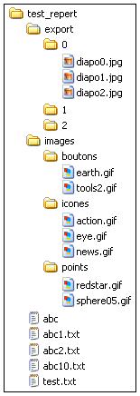

PHP offre un ensemble de fonctions pour gérer les dossiers sur
le disque du serveur (ou un disque accessible depuis le serveur).

Certaines opérations ne sont cependant pas possibles
directement et nous devons les prendre en charge avec le
développement de nos propres fonctions de gestion qui utilisent très
souvent des mécanismes récursifs.
Pour les exemples, nous utiliserons l'aborescence de dossiers
ci-contre.
Cet aborescence se trouve dans le dossier test du tutoriel. Vous
pouvez voir son contenu avec le bouton dans la
barre de menu du tutoriel.
Si vous ne voyez pas cet aborescence, ou si vous voulez la
ré-initialiser utilisez
ce script.
Contenu d'un dossier
Pour lire le contenu d'un dossier,
nous procédons comme pour la lecture d'un fichier ligne à ligne.
Nous devons exécuter les opérations suivantes :
- ouvrir le dossier avec la fonction opendir().
- Si l'ouverture réussit, cette fonction
renvoie une variable de type resource
représentant un flux de répertoire (stream en anglais) associé au répertoire physique (cette variable de
type resource sera ensuite utilisée pour lister les fichiers contenus dans le répertoire).
- Si l'ouverture échoue (pas les permissions,
répertoire inexistant, etc.), opendir() renvoie
false.
- La fonction accepte comme paramètre un chemin relatif ou absolu vers le
dossier à ouvrir.
- effectuer une boucle pour lire un à un les fichiers (plus exactement les liens)
contenus dans le dossier avec la fonction readdir().
readdir()
renvoie le nom des fichiers ou sous-dossiers; quand
il n'y a plus de fichier à lire, elle renvoie false.
- fermer le flux de répertoire avec la fonction closedir()
ce qui va libérer les ressources système associées au flux.
L'exemple suivant affiche le contenu du dossier test_repert.
La boucle de lecture du contenu du dossier est du même genre que
celle utilisée pour lire les résultats d'une requête SELECT :
while ($elem = readdir($flux)) {
...
}
- la fonction readdir()
est appelée;
- sa valeur de retour est affectée dans la variable $elem;
- si la valeur de $elem est
évaluée à true, le bloc de traitement de la boucle while est exécuté;
- sinon on sort de la boucle while.
Commentaires portant sur les résultats
du script précédent :
- la fonction readdir()
renvoie les noms des fichiers et des sous-dossiers sans faire de
distinction;
- les éléments (fichiers et sous-dossiers) sont affichés dans l'ordre dans lequel ils sont mémorisés dans le système de fichiers;
- les liens particuliers . (point - qui désigne le répertoire en cours de lecture)
et .. (double point - qui désigne son répertoire parent) sont renvoyés par la
fonction readdir()
et apparaissent dans la liste.
Modifions le script pour ne pas afficher (et éventuellement
traiter) les liens particuliers . et ..
Boucle de lecture
La boucle while ($elem =
readdir($flux)) doit être améliorée car elle ne fonctionne pas
correctement dans tous les cas.
En effet, si un élément (fichier ou sous-dossier) s'appelle '0', la boucle s'arrêtera car
la chaine '0' sera évaluée à false
Regardons ce qui se passe si nous essayons de lire le contenu du
dossier test_repert/export qui contient un dossier appelé '0'.
La boucle while ($elem =
readdir($flux)) ne fonctionne pas, et s'arrête dés qu'elle
rencontre le dossier appelé '0'.
Nous devons utiliser
l'opérateur d'inégalité stricte !== et
la syntaxe suivante pour tester la valeur de retour de la fonction readdir() :
while (($elem = readdir($flux)) !==
false)